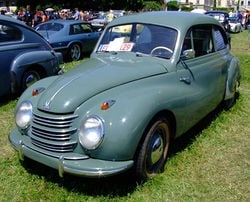
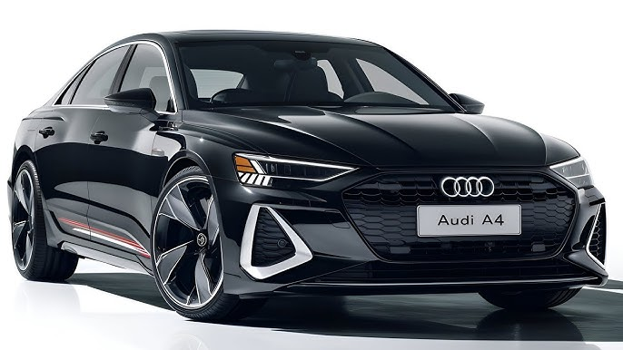
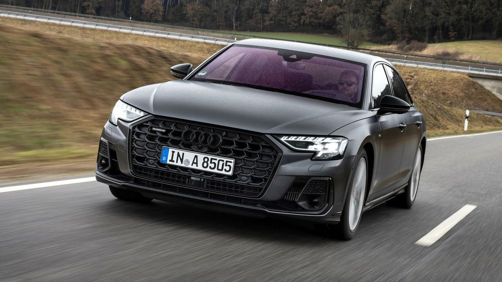

Audi AG[3] — გერმანული საავტომობილო კომპანია, რომელიც შედის კონცერნ Volkswagen-ის შემადგენლობაში 1966 წლიდან. მთავარი ოფისი მდებარეობს ინგოლშტადტში, გერმანიაში.
მოდელების ისტორია Audi Sport Quattro -ს სარბოლო წარმატებებმა განაპირობა საბაზრო წარმატება მოდელისა Audi 80 quattro, რომელმაც ასევე მიიღო საფირმო სრულგაწევიანი სისტემა. ჟენევის ავტოსალონზე 1990 წლის მარტში Audi AG-მ წარმოადგინა Audi duo, სერიული Audi 100 Avant quattro, რომელშიც ჩვეულებრივი ბენზინის ძრავის გარდა ასევე იდგა ელექტროძრავი, განკუთვნილი უკანა თვლებისთვის. საჭიროების შემთხვევაში თვლების წაყვანა შეიძლებოდა გადართულიყო ბენზინის ძრავიდან ელექტროზე. ეს ჰიბრიდული ავტომობილი განკუთვნილი იყო კომუნალური საქმიანობისთვის. 1990 წლის დეკემბერში წარმოდგენილი იყო ახალი Audi 100 (შიდა მნიშვნელობით С4), რომელიც პირველად კონცერნის ისტორიაში შეთავაზებულ იქნა ასევე ექვსცილინდრიანი V ტიპის ძრავით. მძლავრი (174 ცხ.ძ) აგრეგატი 2.8 ლიტრიანი მოცულობით ყველაზე კომპაქტური და მსუბუქი იყო თავის კლასში. მას გააჩნდა ბენზინის მიწოდების ახალი სისტემა, რომელიც უზრუნველყოფდა მაღალ გამწევ ძალას, დაბალი ბრუნების შემთხვევაში და მაღალ სიმძლავრეს ბრუნების ზედა დიაპაზონში. თუმცაღა, სრულამძრავობის მიუხედავად და წარმატებებისა რალიში, Audi-მ ვერ შესძლო დაეპყრო ავტობაზრის ზედა საფეხურები და დამდგარიყო ერთ რიგში BMW-სთან და Mercedes-თან. უმაღლეს კასტაში მოხვედრისათვის მოითხოვებოდა უფრო მეტი. იმის მერე რაც პიხმა დაიკავა Volkswagen-ის კონცერნის მეთაურის პოსტი, დაიწყო Audi-ს მარკის აქტიური გადაპოზიციონირება. 1990 წელს პირველად Audi 100-მა მიიღო მძლავრი და კომპაქტური ძრავი V6. თავიდან გადავიდნენ Volkswagen-ის და Audi-ს ცალკე გაყიდვაზე. 1993 წლამდე ამ მარკის ავტომობილები იყიდებოდნენ ერთი სახურავიდან. VW-ის ხელმძღვანელობამ მოითხოვა ცალკე გასაყიდი ადგილების მშენებლობა Audi-სთვის. VW-ის დილერების მარკეტინგი, როგორც ადრე, შენდებოდა უმეტესწილად კლიენტისთვის ფინანსურად მისაღები პირობების შექმნაზე, ხოლო Audi-ს პოტენციურმა მყიდველებმა დაიწყეს მიზიდვა განსაკუთრებული მომსახურების შეთავაზებებით. Volkswagen-თან ფიქტიურმა „გაყრამ“ Audi-სგან მოითხოვა საკუთარი მოდელების რიგის გაფართოება. 1994 წლამდე ფირმა უშვებდა მხოლოდ ორ მოდელს: Audi 80-ს და Audi 100-ს. 1994 წელს სტარტი აიღო წარმომადგენლობითი კლასის სრულამძრაობიანმა სედანმა აუდი А8-მ. ბაზარმა ავტომობილი საკმაოდ თავშეკავებულად მიიღო, მაგრამ თავის მხრივ „გაანათა“ Audi-ს მარკა მაღალ წრეებში. აუდი A3 1996 წელს Audi-მ გამოუშვა გოლფ-კლასის ავტომობილი, კომპაქტური A3. მანქანის შემუშავებამ არ წაიღო ბევრი ხარჯი, ვინაიდან მისი აწყობა წარმოებდა VW Golf-ის ბაზაზე. სამაგიეროდ ავტომობილის სპორტული დიზაინი, დამუშავების ხარისხი და ინტერიერის შესრულება მანქანას ერთი საფეხურით მაღლა აყენებდა, ვიდრე უბრალოდ Volkswagen და აახლოვებდა მას კონკურენტებთან BMW-დან და Mercedes-დან. აუდი A6 1996 წელს Audi-მ გამოუშვა ბაზარზე ბიზნეს კლასის მოდელი А6. შესრულების ხარისხით და შიგთავსით, ეს ავტომობილი პრაქტიკულად არაფერში არ ჩამოუვარდებოდა პრემიუმ კატეგორიის ლიდერებს. რჩებოდა მხოლოდ მომხმარებლები დაერწმუნებინათ ამაში. აუდი A8 მომხმარებლებისთვის ბრძოლა შენდებოდა ინოვაციური ტექნოლოგიური იდეების განხორციელებაზე. ზუსტად Audi-მ პირველმა გამოიყენა დიზელის ძრავები წარმომადგენლობითი კლასის მანქანებზე. А8 მთელი 7 წლის მანძილზე რჩებოდა ერთადერთ მოდელად ამ კლასში, რომელიც შეიძლებოდა შეგეძინათ დიზელის ძრავით. ეს ძრავები შეუდარებლად ეკონომიურია და ეკოლოგიურადაც სუფთაა ბენზინის ძრავებთან შედარებით. ამასთან, მათ მეტი მაბრუნებელი მომენტი აქვთ, რომელიც შთაბეჭდილებას ქმნის რომ აქსელერატორის ქვემოთ კიდევ მარაგია. Audi A8-ს წარმომადგენლობითი კლასის სედანი კონკურენტებისგან განსხვავდება ალუმინის ძარით და ყველა წამყვანი თვლებით. დღეს დიზელის ძრავებით გამოდის წარმომადგენლობითი BMW და Mercedes. დიზელის ძრავის დაყენებას აპირებს თავის მოდელებში ისეთი სპორტული მანქანა როგორიცაა Mazerati. Audi-ს კონსტრუქტორები ევროპელ მწარმოებლებს შორის პირველები იყვნენ, რომლებმაც მასობრივად დაიწყეს ძრავების მომარაგება ისეთი გადაცემათა კოლოფებით, რომლებიც მაბრუნებელ მომენტს გადასცემდნენ ძრავიდან ბორბლებზე სიმძლავრის შენარჩუნებით. მანქანებზე რომელზეც ასეთი ავტომატური კოლოფები აყენია თითქმის არ იგრძნობა გადართვის მომენტი. ამ სისტემას ეწორება Multitronic. და მასში არ შეიძლება იგრძნობოდეს გადართვის მომენტი, რადგან იგი თითქმის არ ხდება. Multitronic-ში მხოლოდ ერთი „გადართვაა“ (უკანსვლის ჩაუთვლელად) თანაბრად ცვლადი კოეფიციენტებით. აუდი A2 Audi A2 - კომპაქტური ქალაქის ავტომობილი, მასაც გააჩნდა ალუმინის ძარა, რის გამოც იყო მსუბუქი, მაგრამ ძვირი. და მაინც, ყველაზე მთავარ „ნოუ-ჰაუდ“ Audi-სთვის იქცა ალუმინის გამოყენება ავტომობილის კონსტრუქციაში. 2000 წელს Audi-მ პირველმა ავტომწარმოებლებში გამოუშვა მთლიანად ალუმინის სერიული ავტომობილი А2. მანქანა გამოვიდა ორიგინალური და საინტერესო, მაგრამ კომერციული თვალსაზრისით მას ჩავარდნა ელოდა: დღეს Audi-ში არ მალავენ რომ პროექტი А2 დაიხურა. როგორც თვითონ ფირმაში თვლიან, მთავარი პირობა ამ პატარა მანქანის დაბალი გაყიდვებისა იყო მისი მაღალი ფასი. ბოლო 3 წლის განმავლობაში, მაგალითად გერმანიაში ყველა მოხმარების პროდუქტზე და უმეტესობა მომსახურებაზე ფასები გაიზარდა მინიმუმ ორჯერ, და ახალგაზრდობას - მთავარი კატეგორია, რომელზეც იყო გათვლილი Audi А2, უბრალოდ არ შეუძლია თავს ნება მისცეს იყიდოს ასეთი ძვირი მანქანა. Audi TT იქცა ნამდვილ რევოლუციად მსოფლიო დიზაინში და წამიერად გადაიქცა თანამედროვე კლასიკად. ამჟამად მსოფლიო ავტომწარმოებლებში არავინ ისე ფართოდ არ გამოიყენებს „ფრთოვან მეტალს“ როგორც Audi. მისი მოდელების რიგში გამოჩნდა მთლიანად ალუმინის А8 - ახალი ავტომობილი, განკუთვნილი წარმომადგენლობითი კლასისთვის. ძნელია თქვა, როგორი ბედი ეწეოდა ამ პროდუქტს: ამჟამად, მაგალითად, რუსულ ბაზარზე А8 მნიშვნელოვნად ჩამორჩება თავის კონკურენტებს. 1995 წლიდან 10 განვლილი წლის შემდეგ Audi გამოვიდა პრესტიჟული ავტომობილების კატეგორიაში, კომპანიის ბრუნვამ იმატა 8,5 მლრდ-დან 22,6 მლრდ ევრომდე. ტექნიკური ინოვაციები, რალიში გამარჯვებები, ”ფრთოვანი მეტალის” გამოყენება. ფერდინანდ პიხის გეგმები გამართლდა. კარგა ხნის შემდეგ Audi კვლავ შეეჯახა მოდელების ნაკლებობას თავის რიგებში. გერმანელი კონკურენტები კარგა ხანია რაც მომხმარებლებს რამდენიმე ყველგანმავლებს სთავაზობენ, მაშინ როდესაც Audi-ს ჰქონდა მხოლოდ კროსოვერი Allroad. ეს პრობლემა კარდინალურად გადაიჭრა 2005 წელს, როდესაც შუქზე გამოვიდა Q7. გააერთიანა რა Volkswagen Touareg-ის პლატფორმა და A6-ის და A8-ს სედანების ელემენტები, მან მყისვე მოიპოვა პოპულარობა უზრუნველყოფილ მომხმარებლებში: Q7-ს მორცხვი ვერსიები გეგმაში არ ყოფილა. ცოტა დაგვიანების მიუხედავად Audi-მ ერთი თავით გადაუსწრო თავის კონკურენტებს. Audi-ს სარეკლამო ლოზუნგი, მიძღვნილი Q7-სთვის: „კმარა მორცხვობა: «იგი მოვიდა, რომ წაიღოს თავისი»“. ყველგანმავალმა არათუ თავისი წაიღო, არამედ სხვებისაც მიიტაცა. მაგრამ მძლავრი ჯიპის გამოშვებამ პრობლემა ვერ აღმოფხვრა. ხაზში დარჩა ძალიან საინტერესო თეთრი ლაქა: სპორტქარები, კომპაქტური კროსოვერები, სუპერქარები, მინივენები. რაც აღსანიშნავია, ყველა ეს ვაკანტური ადგილები უახლოეს წლებში შეივსება აბსოლუტურად ახალი მოდელებით.
  ტრასიდან ქუჩამდე, Audi Sport-ის მოდელები შექმნილია მათთვის, ვინც მოითხოვს პიკურ შესრულებას და დაუოკებელ სიჩქარეს. ეს მანქანები Audi-ს მდიდარი საავტომობილო სპორტის მემკვიდრეობის შედეგია, რაც აშკარაა მათი დიზაინისა და ინჟინერიის ყველა ასპექტში. Audi Sport-ის ოჯახი მოიცავს შთამბეჭდავ RS სერიას, მოქნილ S მოდელებს და ლეგენდარულ R8-ს. Audi Sport-ის ხაზის თითოეული მოდელი შესრულების შედევრია, RS 6 Avant-ით, რომელიც გამოირჩევა 630 ცხენის ძალის სიმძლავრით და 0-დან 100 კმ/სთ-მდე აჩქარების დროით სულ რაღაც 3.4 წამში. RS 7 Sportback არის როგორც ლამაზი, ასევე ძლიერი, RS 6-ს შეესაბამება თავისი შთამბეჭდავი 630 ცხენის ძალის ძრავით, რომელიც მას 0-დან 100 კმ/სთ-მდე სულ რაღაც 3.4 წამში აჩქარებს. არ უნდა ჩამორჩეს, Audi R8 Performance მოდელი არის სპორტული მანქანა, რომელსაც აქვს ხასიათი, სიჩქარე და დასამახსოვრებელი მართვის ყველა მახასიათებელი, რომელიც ქმნის ამაღელვებელი შესრულების საფუძველს, რომლის შედარებაც შეუძლებელია. Audi Dallas-ში ვამაყობთ, რომ გთავაზობთ Audi Sport-ის ამ გამორჩეულ მოდელებს, რომელთაგან თითოეული მზადაა ადრენალინით სავსე გამოცდილება შესთავაზოს ჩვენს მომთხოვნ მომხმარებლებს.